Click on images to enlarge
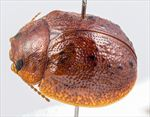
Male, Deepwater, N.E. New South Wales
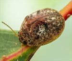
Male, Cooma, S.E. New South Wales
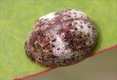
Female, Wilsons Downfall, N.E. New South Wales
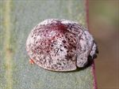
Female, Lincoln N.P., South Australia
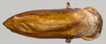
Aedeagus, dorsal view (Glen Innes, N.E. New South Wales)
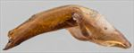
Aedeagus, lateral view (Glen Innes, N.E. New South Wales)
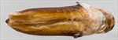
Aedeagus, dorsal view (Murrumbucca, S.E. New South Wales)
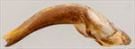
Aedeagus, lateral view (Murrumbucca, S.E. New South Wales)
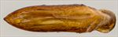
Aedeagus, dorsal view (Zeehan, Tasmania)
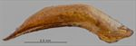
Aedeagus, lateral view (Zeehan, Tasmania)
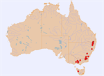
Distribution
Ta06
Name
Trachymela sp. Ta06
Reference specimen
2000-087b, Boonoo Boonoo, NE NSW
Adult Description
Length: ♂ (4.75)5.1–6.0 mm (n=41), ♀ 5.6–7.1 mm (n=46).
Colouration:
Head: uniformly straw-brown to mid-brown with dark-brown or black-tipped mandibles; antennomeres straw-brown, distal antennomeres usually very slightly darker.
Pronotum: brown, concolorous with head [southern NSW specimens with a dark-brown or black patch in centre of each foveal depression].
Scutellum: brown, concolorous with pronotum, usually broadly edged in a slightly darker shade of brown.
Elytra: brown, concolorous with pronotum, with marginal area sometimes [especially in southern NSW specimens] noticeably lighter in shade than disc; disc scattered with small, wart-like elevations that are slightly to considerably darker than surrounding area, transverse depression near centre of disc rarely with dark-brown or even black patches along its rear edge; punctures similar to or a fractionally darker shade than interstices, humeral callus concolorous with surrounding area.
Venter & Legs: light- to mid-brown with legs of a similar shade, inside surface of elytral epipleura brown.
Cuticular Wax: light brown or (less commonly) greyish, unevenly distributed over dorsal surface with greatest concentration in posterior third and post-median depressions of elytra.
Morphology:
Head: punctures moderately large (pd ≈ 1.5–2× ef) and quite evenly and quite densely packed. Antennae short, particularly in females (AL/BL: ♂ 38–41%, ♀ 32–33%), filiform.
Pronotum: almost evenly curved transversely, foveal depression absent or exceedingly shallow with epidermis elevated in a rounded pustule near its centre, discal area with surface somewhat uneven and puncturation clearly impressed, evenly distributed and quite dense (spacing ≈ 2pd), becoming much coarser at lateral margins, some much finer punctures scattered among larger ones. Front margins join lateral margins in a smoothly rounded right-angle, with lateral margin initially straight before curving smoothly and gradually towards rear margin.
Scutellum: unpunctured or very lightly punctured, more so anteriorly, with punctures finer than those on adjacent area of pronotum.
Elytra: surface unevenly curved with a distinct broad, shallow depression extending from just below elytral summit towards discal margin, punctures distinct and relatively large, closely spaced and evenly distributed over anterior two-thirds of surface, surface more granular in posterior third, with much smaller punctures scattered on interstices, several small elevated, usually dark verrucae scattered about surface, three groups of these usually present: one group (sometimes quite inconspicuous) in area between humeral callus and elytral suture and transverse depression, a second group, often most prominent, aligned roughly along posterior edge of depression, while a third consists of more isolated verrucae in posterior half of disc; surface continuous under humeral callus. Vertical extension of epipleura considerable (HCE/PW = 0.39–0.41).
Venter: prosternal process almost parallel, closed anteriorly, a scatter of long setae present along prosternal process and on mesoventrite, a single seta each on anterior, median and posterior trochanters; front edge of metaventrite beveled, slightly rounded; inner edge of posterior of epipleurae lacking setae.
Male Genitalia (Aedeagus):
Dimensions: lanceolate, very small (LPE/BL = 22–25%).
Dorsal view: broadest at junction with basal section, from where sides converge very gradually [sub-parallel in southern specimens] towards apex, angle of convergence becoming sharper shortly before apex, dorsal surface smoothly curved with faint dorso-median channel usually present for most of length, tip very slightly protruding, ostium small, oval.
Lateral view: almost evenly and quite lightly curved throughout its length, not thinning noticeably towards apex before ostium, tip slightly deflexed.
Immature Stages
Unknown.
Similar species
Ta150: the aedeagus of this species is noticeably narrower than that of Ta06. Individuals of Ta150 tend to have a less pronounced transverse depression on the elytra and usually (but not always) have a denser and darker distribution of verrucae.
Ta153: another species that is very similar in external morphology and morphometrics to Ta06. The single known specimen of Ta153 from Victoria has fewer but more prominent verrucae in the posterior half of the elytral disc and the aedeagus is very prominently narrowed in the anterior half.
Ta33: the aedeagus of this species is longer relative to body length and more triangular in shape. Otherwise, specimens can be difficult to tell apart – the transverse depression tends to be less well defined than that in Ta06 in the majority of specimens but the distribution of verrucae, their pigmentation and the occasional presence of a dark patch in the region of the transverse depression is similar in the two species. However, specimens of Ta33 almost invariably have more than one long seta on each trochanter.
Ta19: individuals of this species can also be very similar to Ta06. They are generally somewhat darker dorsally, with a larger number of better-defined verrucae present while dark brown or even black areas are present ventrally in most specimens.
Ta90: this species generally has a transverse elytral depression as well defined as Ta06. However, specimens are dark brown ventrally and have a much denser and darker scatter of verrucae on the elytra.
Ta32: a slightly darker species, with much more regularly and densely distributed verrucae, each of which is smaller and darker.
Ta65: the aedeagus of this species is rather similar in shape to that of Ta06. However, it is a darker species, with a barely noticeable lateral depression and a denser scatter of small, black verrucae.
Ta16: a darker and slightly larger species, with a barely noticeable lateral depression and a denser scatter of small, black verrucae; very dark ventrally.
Ta209: this Tasmanian species is of about the same size as Ta06. The depression in the elytral surface just anterior to the middle is not as well defined as in Ta06, and it tends to have more verrucae scattered on the posterior half of the disc. The lighter-coloured surface between the verrucal rows 3, 5 and 7 may indicate concentrations of cuticular wax along these rows, though no fresh specimens are available to verify this.
Other species: Yet another species, not yet characterized, but very similar to Ta06 is likely present, including the specimens [2006-134] and [1998-1005a-c].
Notes
Taxonomy: Ta06 is a member of a species complex in which individual species are rather difficult to characterize and needs a lot more work, particularly in determining the host preferences of individual species. It is almost certainly the same as the species designated as Ta6 in de Little (1979, PhD thesis).
Host Associations: Ta06 has been collected from a range of Eucalyptus species, including, on Symphyomyrtus: Maidenaria – E. acaciiformis (n=24), E. mannifera (n=2), E. rodwayi (adults and larvae; de Little, 1979); on monocalypts (Eucalyptus: Eucalyptus) – E. radiata (n=4), stringybarks (Capillulus) (n=16), E. obliqua (n=2), E. pauciflora (n=2), E. stellulata (n=1), E. andrewsii (n=2).
Morphological Variation: Specimens collected in the more southerly locations (Gunning, southern highlands, Victoria and Tasmania) tend to be slightly darker, usually have a dark patch in the foveal depressions and have an aedeagus that is sub-parallel for much of its length and not as strongly curved when viewed laterally. In addition, the aedeagus LPE/BL values tend to be somewhat higher than for equivalent sized specimens from northern NSW, and the aedeagus is more curved when viewed laterally. Many of the specimens from southern mainland locations were obtained from stringybark. It is very possible that these are specifically distinct from the typical (northern) Ta06. Note, however, that there is also some diversity in aedeagus shapes in these southern specimens, with, for example, that of the Gunning specimens blunter towards the apex than southern highland specimens (e.g., [2004-708] vs [2001-044]). The two specimens from South Australia (Kangaroo Island and Lincoln N.P. on the Eyre Peninsula) fit well within the range of variation of this species in essentially all characters, including the distribution of cuticular wax. The specimen from the Eyre Peninsula has only a sparse scattering of verrucae in the apical region of elytra, but in that regard is almost identical to a specimen from around Jindabyne, N.S.W. [2017-449]. A female specimen from Tenterfield [2000-509], collected from an unspecified stringybark species, is slightly different morphologically, in having a more prominently reticulate elytral sculpture and a thin transverse ridge across the elytra just behind antero-median depression.
Copyright © 2026. All rights reserved.
{kind=link}
{kind=link}
{kind=link}
{kind=link}
{kind=link}
{kind=link}
{kind=link}
{kind=link}
{kind=link}
{kind=link}
{kind=link}